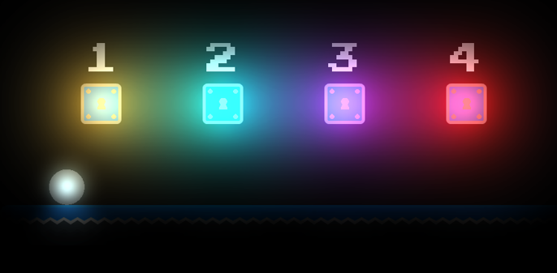

I've always loved sidescrolling platformer games and wanted to take a shot at making a platformer with realistic physics and challenging gameplay. Thus I decided to create Parllax for the final summative of ICS4U1 (Computer Science) in Java, using libGDX game engine. Parallax was voted best project of the 2015/2016 year.
In Parallax, the maps are almost completely pitch black. The only source of light is the player themselves. The player steadily loses "light energy" as time passes on, and must reach a checkpoint before their light extinguishes. This makes gameplay extremely challenging as players have to rush to find the checkpoints while only being able to see their immediate surroundings.
This is the proposal that was created before beginning working on the game. Although some things did change during development, the main ideas and concepts are the same as was pitched in this initial design.
You can download and try Parallax for yourself! (Hint: pressing 0-9 keys on your keyboard will teleport you through the different levels if you can't beat them)
Requires java to run